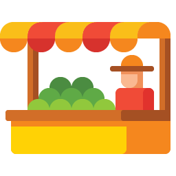

WHAT WE OFFER
Why Choose Top Ports?

Quality Assuarance
We adhere to the highest standards of quality control, ensuring that our products meet international standards.

Sustainable Practices
We are committed to sustainable sourcing and environmentally friendly practices, supporting local farmers and communities.

Reliable Logistics
Our efficient logistics network ensures timely delivery of fresh produce to any part of the world.
Customer Focus
Our customer-centric approach means we tailor our services to meet your specific needs, providing personalized support.
Extensive Product Range
We offer a wide variety of spices, fruits, vegetables, and other food products, ensuring you have access.
Competitive Pricing
We provide high-quality products at competitive prices, ensuring value for money without compromising on quality.